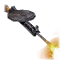
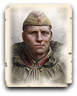

Считается элитным среди советских войск из-за их обширной боевой подготовки и опыта; имея лучшее снаряжение их отправляют на самые сложные поля сражений.
Гвардейцы – мощная пехота, которая способна эффективно противостоять легкой технике противника и на равных бороться с пехотой. Винтовки гвардейцев имеют повышенную точность и урон по сравнению с винтовками новобранцев. Помимо 4 винтовок у гвардейцев на вооружении имеются 2 ПТРС и осколочная граната. Гвардейцы не могут стрелять из ПТРС на бегу. На 1 ветеранстве открывается доступ к способности Огневые позиции, которая увеличивает темп стрельбы отряда, но лишает его возможности передвигаться. Используйте эту способность при отражении вражеских атак, а при приближении противника бросайте в него гранату.
Гвардейцы получившие 2 пулемета дп-28 становятся очень опасным отрядом для вражеской пехоты. После появления дп-28 гвардейцы получают доступ к способности ослепить вражеский танк, которая уменьшает обзор вражеской техники и замедляет ее скорость на некоторое время. При активации этой способности не следует двигать отряд, так как если дать гвардейцам другую команду, то эффект от способности мгновенно пропадет. Также эффект пропадет если техника уедет за радиус действия способности, поэтому гвардейцам желательно подойти к вражеской технике поближе.
Так как на руках у гвардейцев находятся 2 птрс и 2 пулемета, то стрелять на бегу могут только 2 человека из отряда, поэтому гвардейцам необходимо перестреливаться только с места.
Стоит отметить, что у гвардейцев с пулеметами урон в секунду (DPS) не снижается с увеличением дистанции (в отличии от других отрядов в игре). Это делает гвардейцев наиболее эффективными на самой дальней дистанции стрельбы.
Сравнение с подобными юнитами
Гренадеры (Восточный Вермахт)
Уровень опасности: низкий
Гвардейцы справятся с гренадерами на любой дистанции. Угрозу могут представлять только несколько отрядов гренадеров или гренадеры с винтовками G43 на близкой дистанции. Гренадеры с ручным пулеметом слабее гвардейцев.
Панцергренадеры (Восточный Вермахт)
Уровень опасности: средний
Гвардейцы победят панцергренадеров только на дальней дистанции, следует избегать ближнего боя с этим отрядом.
Фолькгренадеры (Западный Вермахт)
Уровень опасности: низкий
С фольксгренадерами следует бороться также, как и с гренадерами вермахта, но стоит учитывать, что фольксгренадеры с StG44 победят гвардейцев в ближнем бою.
Штурмовым саперы (Западный Вермахт)
Уровень опасности: средний
В ближнем бою штурмовые саперы победят гвардейцев, поэтому нашему отряду необходимо нанести как можно больше урона на дальней дистанции и вовремя отступить. Удачно брошенная граната может нанести существенный ущерб и вынудить саперов отступить первыми.
Оберсолдаты (Западный Вермахт)
Уровень опасности: высокий
Оберсолдаты представляют серьезную угрозу для нашего отряда, против оберсолдат лучше использовать несколько отрядов гвардейцев и держаться на средней дистанции.
Улучшения
Требуется Доступно для командиров |
||
|---|---|---|
|
 75
|
ДП-28
Каждый легкий пулемет ДП-28 равен огневой мощи трех стандартных пехотных винтовок M1891 / 30. |
|
Способности
Требуется Доступно для командиров |
||
|---|---|---|

30
|
Осколочная граната РГД-33
Боец отряда бросит противопехотную гранату РГД-33. Эффективен против вражеских войск в укрытии.
|
|
|
|
Огневые позиции
Гвардейцы занимают оборонительные позиции, ложась на землю, увеличивая скорость стрельбы. (Возможность переключения. Уменьшает время восстановления оружия, но останавливает движение. Не может использовать способность, когда подавлены или прижаты огнем.
|

|

|
Винтовка Мосина
|
4
|
|
Противотанковое ружье ПТРС
|
2
|
Доступно для командиров


Ветеранство

- увеличивается пробивная способность
- увеличивается точность стрельбы
- уменьшается точность стрельбы вражеских юнитов по отряду

- увеличивается продолжительность способности "Обездвижить технику" (+2 секунды)
- уменьшается время перезарядки оружия
- уменьшается точность стрельбы вражеских юнитов по отряду
- увеличивается точность стрельбы